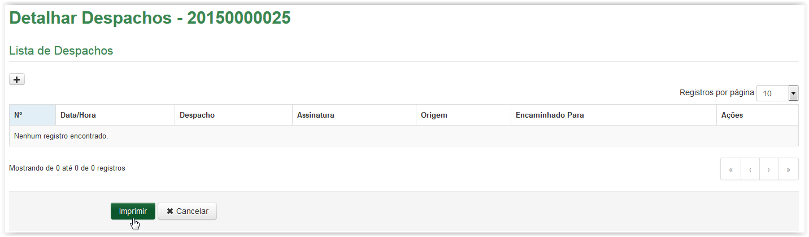
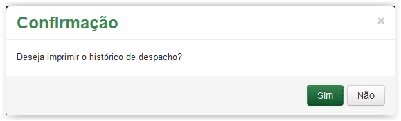
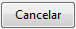
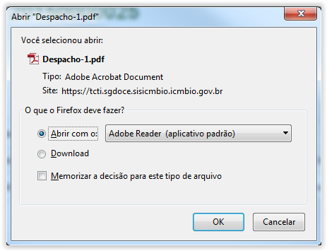
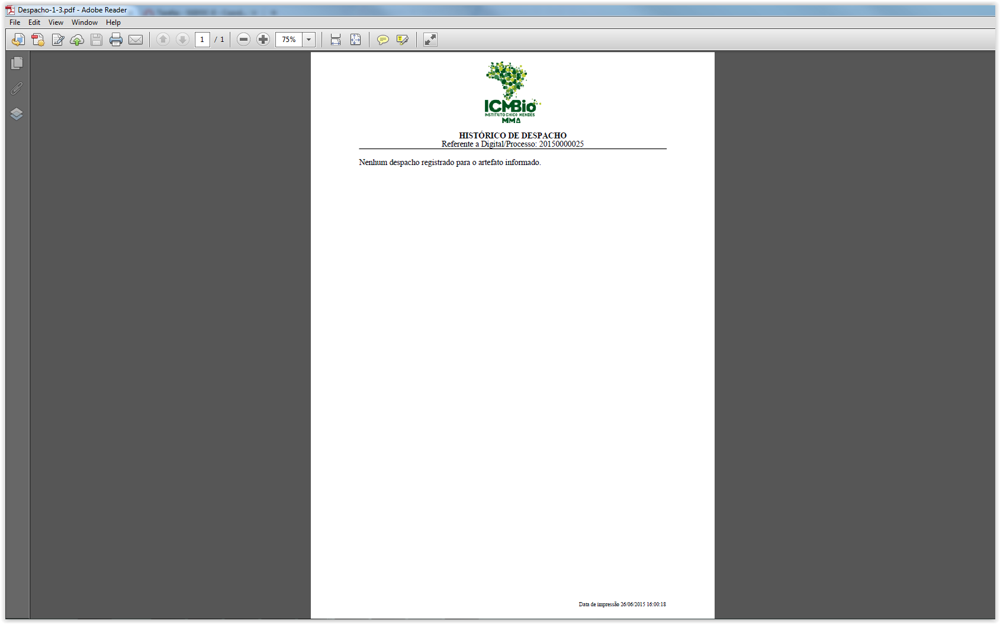
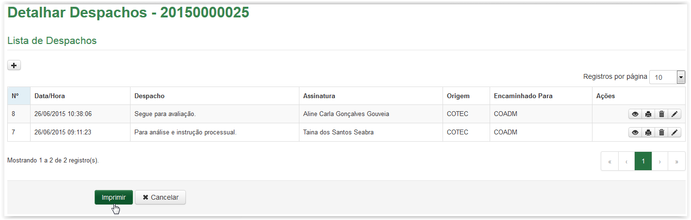
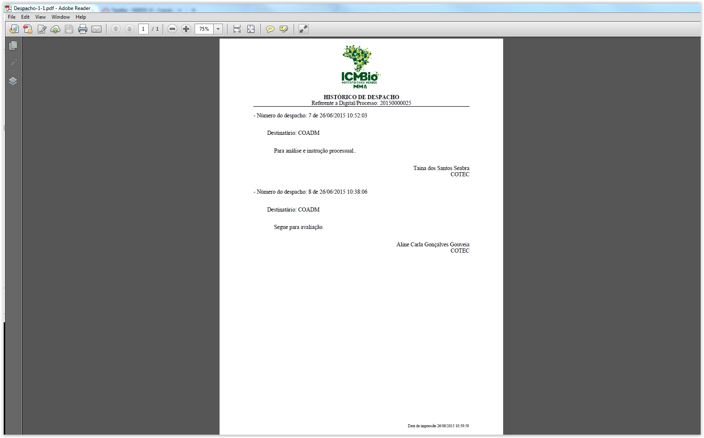

Despachar artefatos
A partir da tela Detalhar Despachos, clique no botão :

Imprimir Histórico de Despachos - Lista de Despachos vazia
Uma mensagem de confirmação é apresentada:

Mensagem de confirmação para impressão do Histórico de Despacho
Se não desejar imprimir o Histórico de Despacho, clique no botão e o sistema retorna para a tela com a Lista de Despachos. Caso contrário, clique no botão .
Ao confirmar a impressão o sistema apresenta a tela abaixo. Para visualizar o documento clique no botão , caso contrário, clique no botão :

Solicitação para apresentação ou download do documento em formato "PDF"
Ao clicar no botão o Histórico de Despachos, em formato “PDF”, é apresentado:

Histórico de Comentários - sem comentários cadastrados
O Histórico de Despachos apresenta no cabeçalho o logotipo do ICMBio, o título e o número da Digital ou Processo ao qual se refere. Logo após, é apresentada a mensagem: "Nenhum despacho registrado para o artefato informado". No rodapé é apresentado ainda a data e hora da impressão. Se desejar, o Histórico de Despachos poderá ser impresso.
A partir da tela Detalhar Despachos, clique no botão :

Imprimir Histórico de Despachos
Uma mensagem de confirmação é apresentada:
Mensagem de confirmação para impressão do Histórico de Despacho
Se não desejar imprimir o Histórico de Despacho, clique no botão e o sistema retorna para a tela com a Lista de Despachos. Caso contrário, clique no botão .
Ao confirmar a impressão o sistema apresenta a tela abaixo. Para visualizar o documento clique no botão , caso contrário, clique no botão :
Solicitação para apresentação ou download do documento em formato "PDF"
Ao clicar no botão o Histórico de Despachos, em formato “PDF”, é apresentado:

Histórico de Despachos
O Histórico de Despachos apresenta no cabeçalho o logotipo do ICMBio, o título e o número da Digital ou Processo ao qual se refere. Logo após, são apresentados todos os despachos cadastrados, até aquele instante, para o respectivo artefato (documento ou processo). São apresentadas as informações de cada despacho gerado: a data e hora, o número do despacho, a Unidade de destino, o texto do despacho além do nome e setor daquele que assinou o despacho. No rodapé é apresentado ainda a data e hora da impressão. Se desejar, o Histórico de Despachos poderá ser impresso.
Created with the Personal Edition of HelpNDoc: Produce electronic books easily